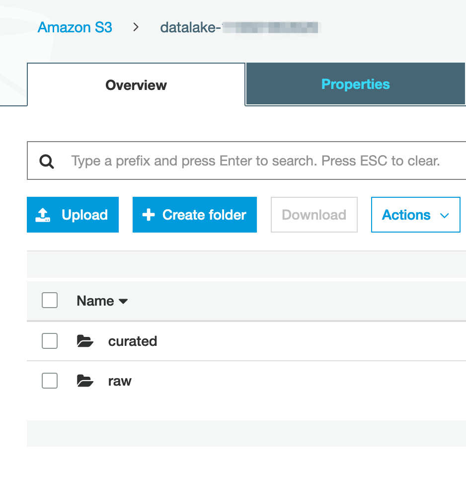
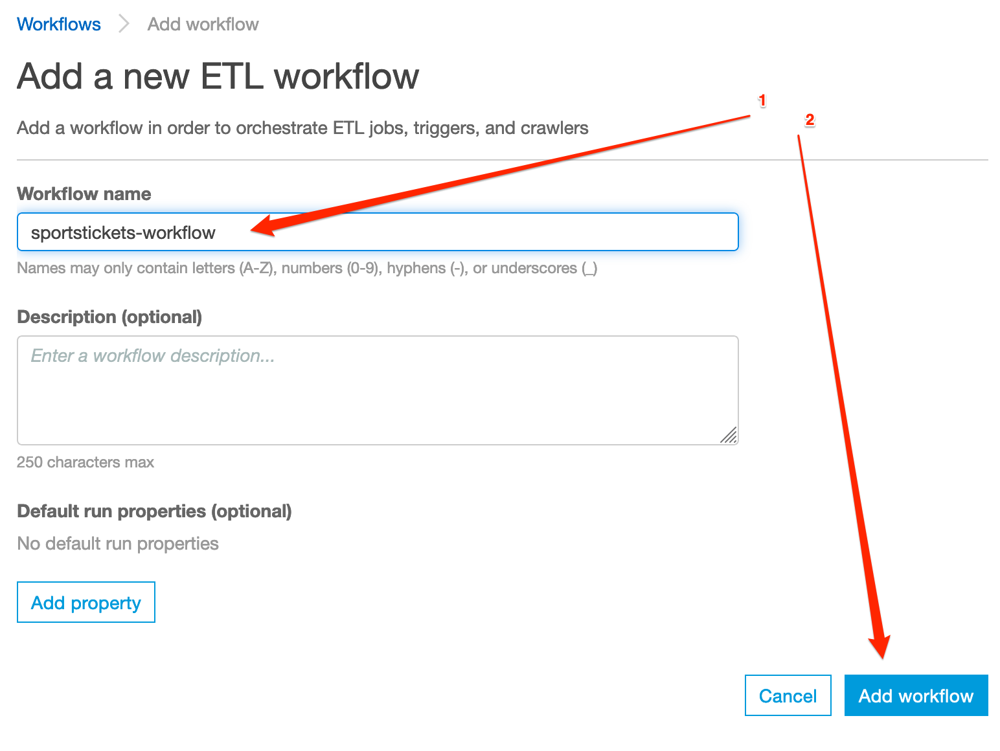
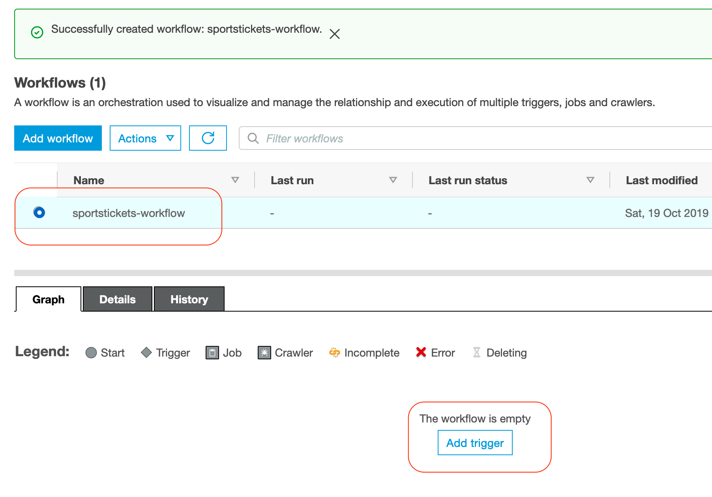
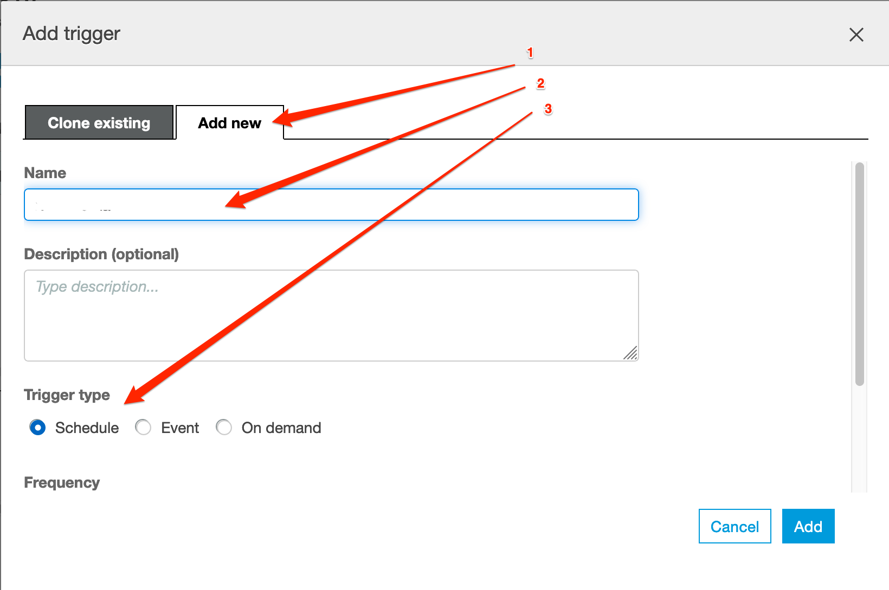
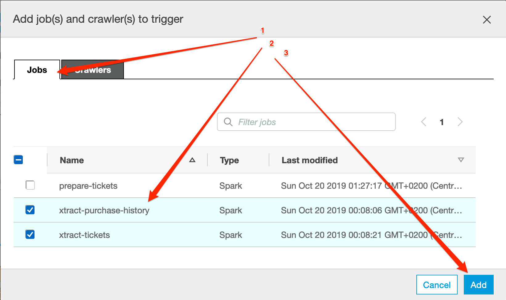
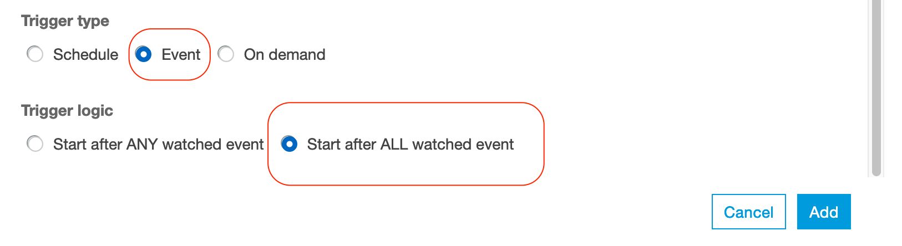
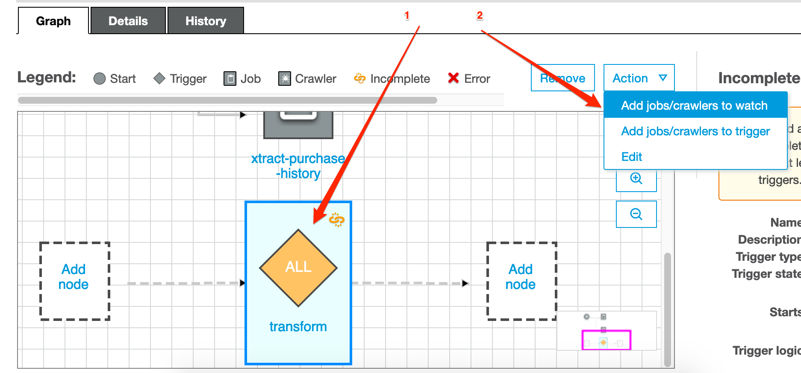
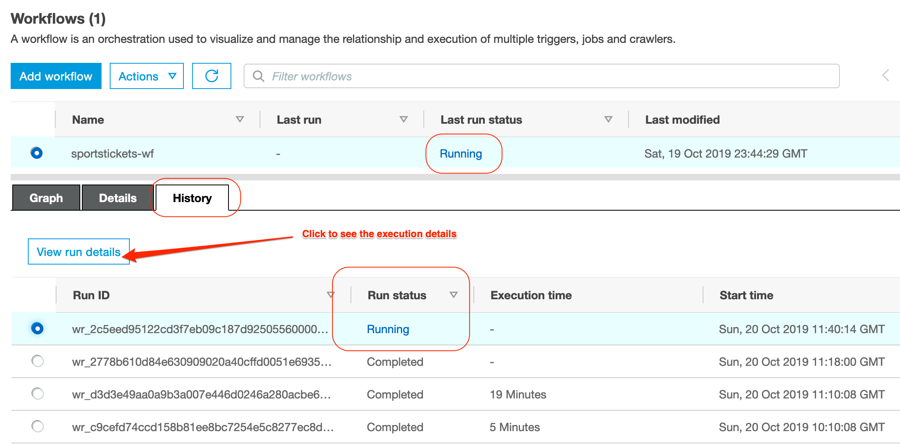
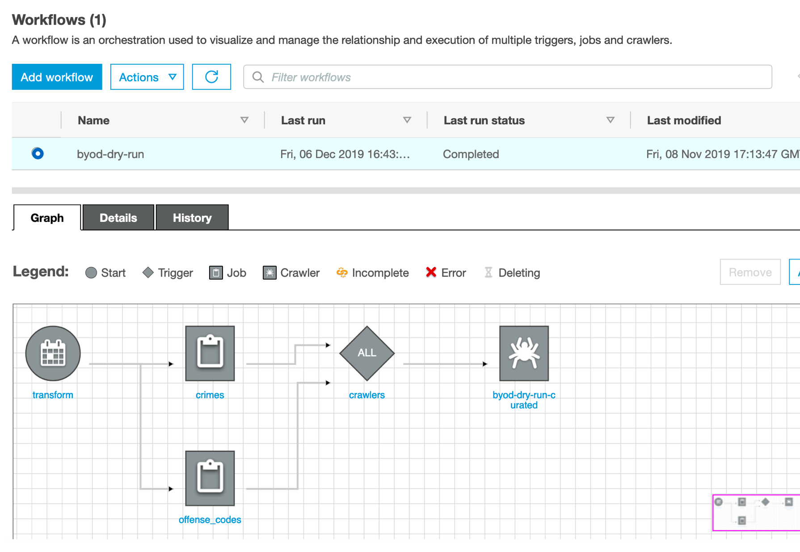

Orchestrating the data pipline¶
In this lab we will continue to work with Glue and convert the raw data we have extracted in the previous lab into a curated data set by making some aggregation.
Please note: this Lab depends on the steps executed in the Transformation LAB; In case you didn’t finish that one yet, now is the time :)
At this stage we have Glue Jobs configured to covert our raw data into Parquet. We should be able to observe 2 main folders in our data-lake bucket (raw and curated).

So far so good, however we’d probably like to automate this process and repeat it on a daily basis for example.
Orchestrate the data pipeline using the Workflow feature¶
The plan is to create a pipeline, which will refresh the data-set every once in a while. The next steps assume you need to perform some jobs before running the others. However, if your transformation jobs can run in parallel, feel free to add them in parallel in the pipeline. An example of dependent jobs would be if you have jobs that extracts data from other source and ingest it into your data lake before kicking off another transformation jobs.
Let’s navigate to the Workflows in the ETL section on the left side-pane.

- we start by clicking on the Add Workflow button;
- add a name for our workflow (e.g.
sportstickets-wf) and press the Add Workflow button;

Once the workflow is created add the first trigger to it.

- make sure you selected the Add New tab;
- define a Name for the new trigger (
transform-data); - specify the Frequency before you press Add (let’s say you run this workflow at the 30th minute of every hour);
Start by clicking on the newly created trigger, then add the needed jobs to it (that will run in parallel).

Adding dependent jobs (Optional)¶
Next we add one more trigger to start the aggregation as soon the ingestion is finished. Let’s start by clicking on the Add trigger option in the top right corner of the workflow editor.
Make sure that you select the Add new tab and Event as a Trigger type. Let’s call our trigger transform.
Don’t save it just yet:

Scroll down and select the “Start after ALL watched event” option at the Trigger Logic. This will make sure that we will only trigger the aggregation job, once all the ingestion jobs are finished.

Now we have a trigger, we just need 2 more steps:
- add the dependency jobs (the ones to be watched)
- add the job which needs to be triggered once all watched ones are completed;

Select the jobs that need to run first, make sure that we’re watching for the SUCCEEDED event and push Add.

We are almost there, however there’s one more thing: the data we just generated is not available in the data catalog for wider audiences. Let’s configure a one more crawler for our curated data and add it to the workflow.
Register the staged data tables in the data catalog¶
Navigate to the Crawlers section in the left pane and press Add crawler.
- at the name specify: {choose-name}_curated;
- at the source types leave the default Data stores option;
- in the data-store section leave the default S3 and the Specified path in my account.
- now select your curated folder: s3://datalake-xxxxyyyyzzzzz/curated
- at the Choose an IAM role section choose the glue-processor-role and hit Next;
- frequency stays On demand;
- and finally we add a new database called {choose-name}_curated
We return to the Workflows in the left side pane, select our created workflow and add one more trigger from the Action menu on the right.
- Select the Add new tab;
- Define the name as “crawlers”;
- Choose Event as Trigger type;
- Select “Start after ALL watched event” and click Add;
- Now select the newly created trigger in the workflow editor and click on the Add jobs/crawlers to watch. Select your jobs and hit Add.
- Select the Add jobs/crawlers to trigger option;
- This time select the Crawlers tab and check your curated crawler.
Reviewing the results¶
NOTE: In your created workflow, it starts by executing the jobs. However, because there is always new data being added or updated in your raw folder, you should later add your created crawler in the very beginning as the trigger to your transformation jobs.
Once we are ready, we can try out the workflow by clicking on Run in the Actions menu.
Once you selected a job, you can monitor it the execution status in the History TAB in the bottom panel; If the job(s) succeeded, visit the Metrics TAB to see resource utilisation and data movement information; Also note that the jobs can take quite a bit of time to end, about 15 minutes in total.
When jobs succeed you should find in your S3 bucket a folder called curated with subfolders for all your tables.

By selecting the latest Job and clicking on the View run details you can monitor the execution results of the data processing pipeline:

Once the pipeline succeeded at least once, we should be able to observe the newly created databases in the data catalog.

When you navigate to the Tables you will observe tables created from your data files.
“What can I do with it?”, you may wonder. Stay tuned, we will cover this in great details in the next session.